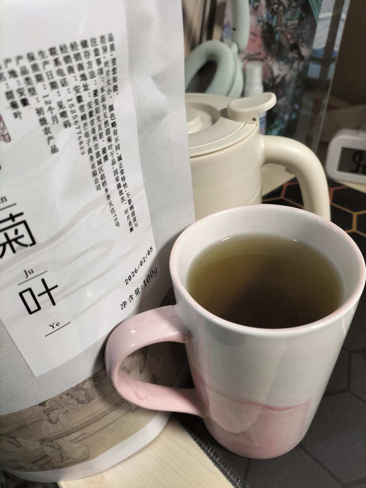

已严肃o入大量甜菊糖苷。
甜菊糖苷精品为白色粉末状。
甜叶菊叶片含甜菊糖苷6-12%，甜菊糖苷精品为白色粉末状。是一种低热量、高甜度的天然甜味剂。
由于甜菊苷类是一种非糖甜味剂，吃进嘴里不会在口腔内细菌作用下产生酸，因此采用它制作的糖果食品，不会因产生酸而腐蚀牙齿，可被用来预防儿童龋齿。由于甜菊苷可耐酸碱，并在pH值4-10范围内，100℃下加热，其化学结构不会发生变化，不会产生微生物所需要的葡萄糖，属于非发酵性的物质，常用于食品保鲜和药品防霉。甜菊苷类在人体内几乎不被代谢，食后不会产生过多热量，故常用来制作肥胖症患者的甜食品，儿童食用的甜菊饮料或甜菊糖果等，可避免肥胖者体重再增加，避免儿童肥胖症。
甜菊糖苷精品为白色粉末状。
甜叶菊叶片含甜菊糖苷6-12%，甜菊糖苷精品为白色粉末状。是一种低热量、高甜度的天然甜味剂。
由于甜菊苷类是一种非糖甜味剂，吃进嘴里不会在口腔内细菌作用下产生酸，因此采用它制作的糖果食品，不会因产生酸而腐蚀牙齿，可被用来预防儿童龋齿。由于甜菊苷可耐酸碱，并在pH值4-10范围内，100℃下加热，其化学结构不会发生变化，不会产生微生物所需要的葡萄糖，属于非发酵性的物质，常用于食品保鲜和药品防霉。甜菊苷类在人体内几乎不被代谢，食后不会产生过多热量，故常用来制作肥胖症患者的甜食品，儿童食用的甜菊饮料或甜菊糖果等，可避免肥胖者体重再增加，避免儿童肥胖症。
